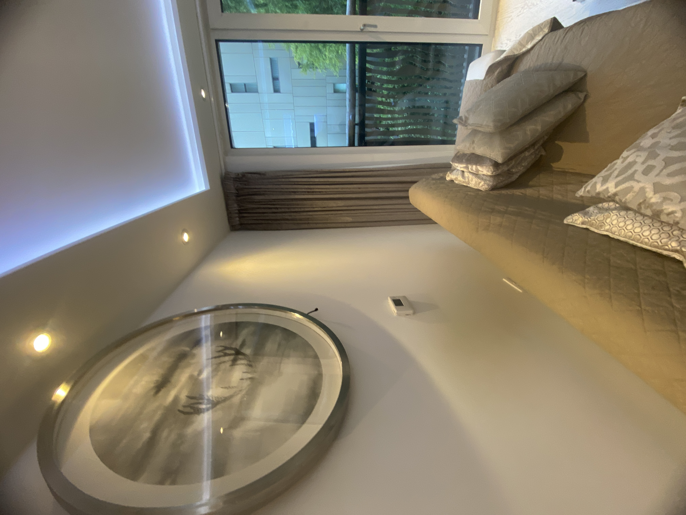
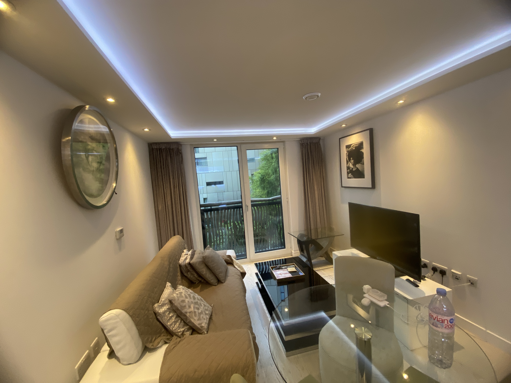
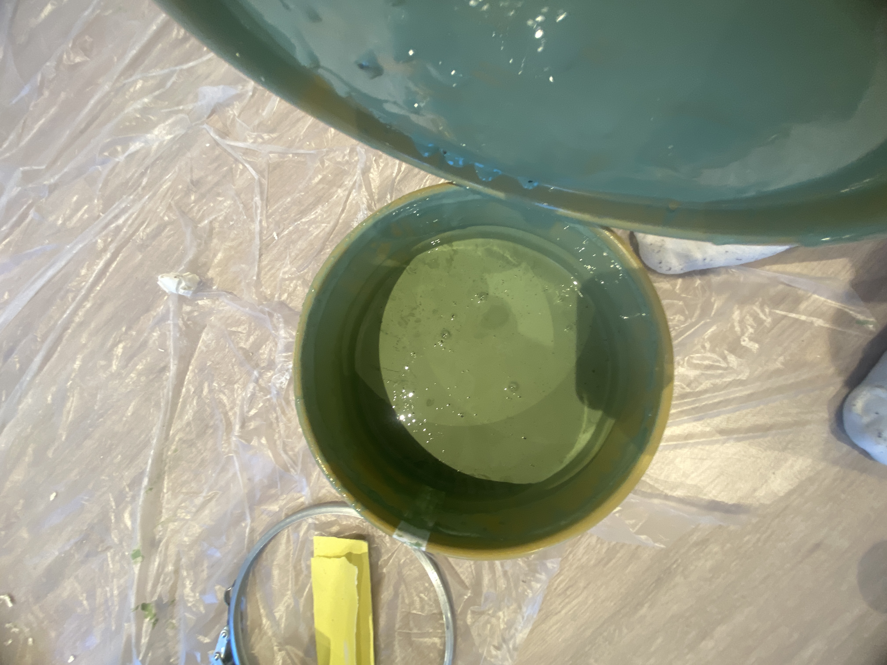
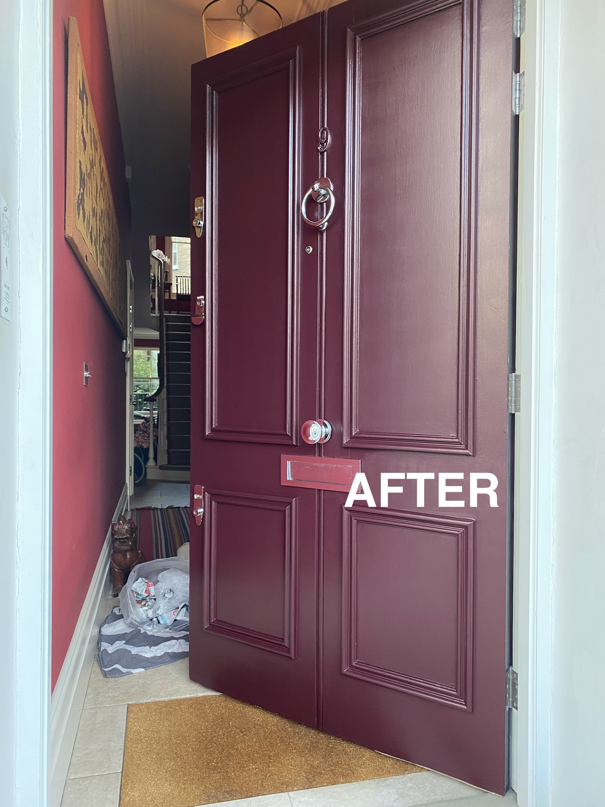
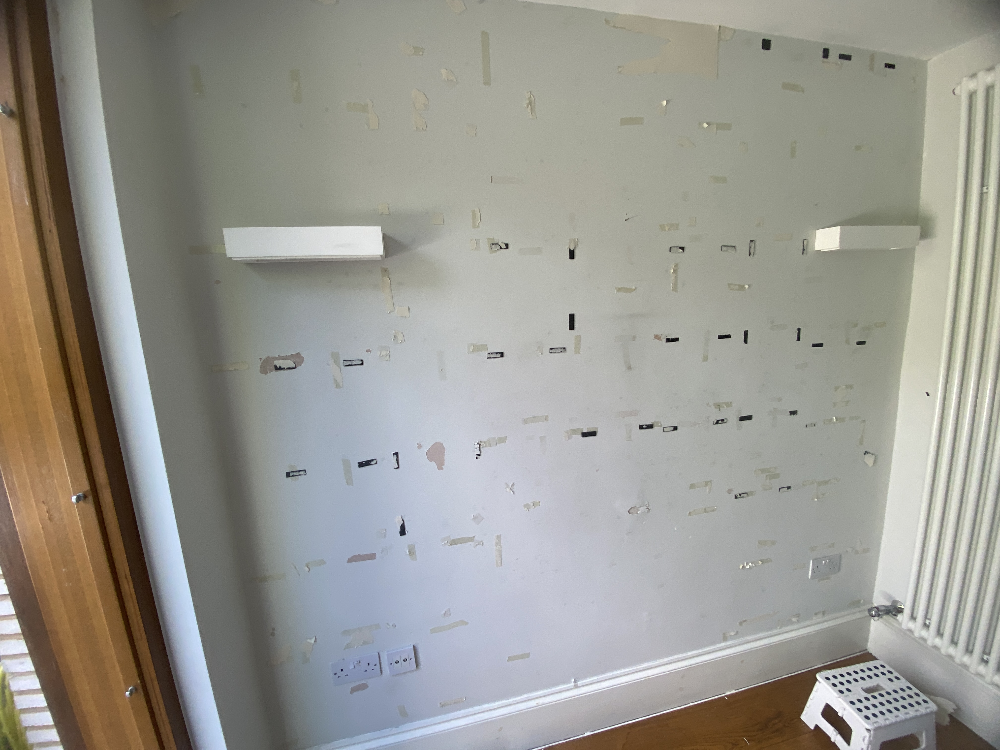

How to Choose the Best Painter and Decorator in London (2026 Guide)
Everything you need to know before hiring a painter and decorator in London: what to look for, the questions to ask, what it should cost, how long it takes, and the red flags to avoid.
In short: look at real finished work, read reviews on more than one platform, ask exactly how walls will be prepared, get a written quote that lists what’s included, and confirm public liability insurance. Day rates in London are typically £200–£350, and a full 2-bed flat usually costs £1,800–£2,500. Details below.
What Does a Painter and Decorator Actually Do?
A professional painter and decorator in London does far more than apply paint. They assess and prepare surfaces, repair imperfections, apply primer, and deliver a clean finish that lasts for years. The painting itself is often the quickest part of the job. Most of the skill, and most of the time, goes into getting the surface ready.
In older London homes, such as Victorian terraces, period flats and Edwardian conversions, surfaces often have cracks, damp shadows, or multiple layers of old paint that must be treated properly before decorating begins. Skipping preparation is the number one cause of paint failure.
Different properties need different approaches. Period homes tend to need more repair work and careful woodwork preparation. Newer flats usually have flatter walls but can have poor-quality factory paint or fresh plaster that needs a mist coat. Rental properties often need a fast, durable, practical finish. A good decorator will talk to you about which of these applies to your home before quoting.


Check Experience and Previous Work
One of the most reliable ways to evaluate a decorator is by viewing their portfolio. Professional decorators in London typically show completed projects on their website or Instagram account.
Look specifically for clean cut lines at edges and ceilings, smooth, even finishes without roller marks, and consistent quality across different room types and lighting conditions. These details reveal real skill.
Ask for examples that are similar to your job. A decorator who mainly paints new-build flats may not be the best fit for a Victorian house with old plaster, and the reverse is also true. If you can, ask to see photos at different stages, including the preparation, not only the finished result. It’s also fair to ask whether you can speak to a recent client.
Read Customer Reviews
Google, Checkatrade, Trustpilot and TaskRabbit reviews offer honest insight into a decorator’s reliability and professionalism. Look beyond star ratings and read what customers say about punctuality, tidiness, communication, and whether the job was completed as agreed and on budget.
Check how the decorator responds to a negative review as well. Everyone gets a difficult customer sometimes, and a calm, specific reply tells you more than a perfect score.
💡 Tip: Search the decorator’s business name on Google Maps. Businesses with 10+ reviews over a sustained period are more trustworthy than those with a sudden cluster of new reviews.
Ask About Wall Preparation
Preparation is the foundation of any professional finish, and on many jobs it takes as long as the painting itself. Before applying a single coat of paint, a skilled decorator will:
- Fill holes and cracks with appropriate filler
- Sand down rough areas and old paint edges
- Caulk gaps along skirting boards, coving, and window frames
- Apply a mist coat or primer to new plaster

Any decorator who skips straight to painting without a preparation conversation is a red flag. Even the most expensive paint will look poor on an unprepared surface. If you want to see what good preparation involves, read our guides on wall preparation, using mesh to repair wall cracks and why paint blisters, or see our sanding and preparation, wall filling and repairs and surface priming services.
Tools and Materials Professionals Use
Trade-quality materials make a measurable difference in coverage, durability, and finish. Professional decorators typically source paints and tools from specialist decorator centres, not high street DIY shops.
- Paints: Dulux Trade, Farrow & Ball trade range, Little Greene, or similar
- Brushes: Purdy, Hamilton, or equivalent quality brands for clean edging
- Rollers: Correct nap thickness for surface texture
- Sanding equipment: Sandpaper, orbital sanders and appropriate grit papers

Ask which paint will be used on your job and why. A good decorator can explain the choice. Premium paints cost more per litre but can reduce the number of coats in some colours, while trade paints suit large jobs where durability and cost control matter. For a closer comparison, read our guide to the best paint brands in the UK and our comparison of Dulux and Johnstone’s.
How Much Does a Painter and Decorator Cost in London?
London decorator costs vary based on project size, surface condition, and preparation required. Here is a typical pricing guide for 2026:
| Job type | Typical cost (2026) |
|---|---|
| Day rate (per decorator) | £200 – £350 |
| Standard bedroom | £300 – £650 |
| Living room or larger room | £350 – £600 |
| Full 2-bed flat | £1,800 – £2,500 |
| Full house (3–4 bed) | £2,800 – £5,000+ |
⚠️ Beware of unusually low quotes. A very cheap price often means limited preparation, watered-down paint, or rushed work, leading to a finish that fades, chips, or peels within a year.
What changes the price
- Surface condition: cracks, damp marks, flaking paint and uneven plaster all add preparation time
- Ceilings and woodwork: walls only costs less than walls, ceilings, skirting, doors and window frames
- Colour change: going from a dark colour to a light one often needs extra coats or a primer
- Paint choice: premium paint costs more per litre than trade paint
- Furnished or empty: moving and protecting furniture takes extra time
- Access: high ceilings, stairwells and difficult parking in central London can add time
- Standard of finish: a full woodwork preparation, or a premium finish on doors and trim, takes longer than a standard refresh
Specific jobs such as ceilings, woodwork, doors and wall skimming are often quoted separately, so it’s worth asking whether they are included.
What a Written Quote Should Include
A written quote protects both you and the decorator. When you compare quotes, check that each one states:
- Exactly which rooms and surfaces are included (walls, ceilings, woodwork, doors)
- The preparation work planned, such as filling, sanding and priming
- The number of coats
- Whether paint and materials are included, and which paint will be used
- Start date, expected duration and payment terms
- Whether moving furniture, protecting floors and cleaning up are included
If two quotes are very different, compare them line by line. Often the cheaper one covers less, not the same work for less money.
Common Mistakes to Avoid When Hiring a Decorator
- Choosing the cheapest quote without checking what preparation is included
- No written quote or agreement: always get a breakdown in writing
- No timeline agreed upfront: set clear start and end dates
- Not checking insurance: a professional decorator should have public liability insurance
- Ignoring reviews: one or two negative reviews about communication is a warning sign
- Choosing colours late: changing your mind mid-job costs time and money, so test samples first
- Paying a large amount upfront before work or materials have been agreed
How Long Does a Painting Job Take in London?
Timelines depend on the size of the space, condition of the surfaces, and whether plaster needs to cure before painting. Typical durations:
| Project size | Estimated duration |
|---|---|
| Small bedroom or hallway | 1 – 2.5 days |
| Medium room (living room) | 3 – 4 days |
| Full 2-bed flat | 4 – 7 days |
| Full house (3–4 bed) | 1 – 2 weeks |
These timelines depend on the finish you want and do not include full woodwork preparation. Drying time between coats, repairs to damaged plaster, and extra coats for big colour changes will all add days. If you need a job finished by a specific date, tell the decorator at the quote stage.
Types of Paint Finishes Explained
Choosing the right finish affects how the room looks, how easy it is to clean, and how long the paint lasts:
- Matt: flat finish, hides imperfections well, ideal for ceilings and low-traffic walls
- Silk / Satin: slightly reflective and washable, great for living rooms and hallways
- Eggshell: soft sheen and very durable, popular for kitchens and bathrooms
- Gloss / satinwood: strong, hard-wearing shine, best for woodwork, skirting and doors


Not sure about colour as well as finish? Our guide to paint colours and our colour consultation service can help.
Step-by-Step Professional Painting Process
-
Surface inspection: identifying cracks, damp, previous paint issues, and texture problems.
-
Protection: furniture covered, floors laid with dust sheets, switches masked off.
-
Preparation: filling holes, sanding surfaces, caulking gaps, cleaning walls.
-
Priming: applied to new plaster, stained areas, or bare wood as required.
-
First coat: applied evenly by roller and brush, fully dried before next coat.
-
Second coat: for full, consistent coverage and depth of colour.
-
Final inspection and touch-ups: edges checked, any missed areas corrected, and the room cleared and cleaned.
Getting Your Home Ready for the Decorator
A little preparation on your side helps the job run smoothly and can save time on the quote:
- Decide on colours and finishes before the start date, and test samples on the wall
- Clear small items, pictures and fragile objects from the rooms
- Agree which furniture will be moved by the decorator and which you will move yourself
- Confirm access, parking and building rules for flats, including working hours
- Tell the decorator about pets, children or anyone sensitive to paint fumes
- Point out any known problems, such as damp, leaks or cracks that have returned
Questions to Ask Before You Hire
- Can I see recent jobs similar to mine?
- How will you prepare the walls and woodwork?
- How many coats will you apply, and which paint will you use?
- Is paint included in the price?
- Do you have public liability insurance?
- What are the start and finish dates?
- How and when do I pay?
- What happens if I’m not happy with part of the finish?
A good decorator will answer these clearly and without hesitation.
Why Hire a Local London Painter and Decorator?
London properties have their own quirks: Victorian lath and plaster walls, old sash windows, damp-prone basements, and complex cornicing. A local decorator understands these challenges and how to treat them properly.
Local decorators can also attend quickly for quotes, respond if any issues arise after the job, and are more likely to rely on word-of-mouth, which gives them strong motivation to maintain their reputation.
We work across West and Central London, including Hammersmith, Fulham, Chelsea, Kensington, Notting Hill, Bayswater, Pimlico, Holborn, Shepherd’s Bush, Chiswick and Ealing. See our painter and decorator London page for more.
Examples of Our Work
Here is a before and after from one of our wall repair and repainting jobs in Fulham. You can see more recent projects on our Instagram.


Frequently Asked Questions
How much does a painter and decorator cost in London?
Day rates typically range from £200 to £350. A standard bedroom usually costs £300–£650, a living room or larger room £350–£600, and a full 2-bed flat £1,800–£2,500. A 3–4 bed house is typically £2,800–£5,000 or more, depending on preparation required.
How long does a painting job take in London?
A small bedroom or hallway takes 1 to 2.5 days, a medium room 3–4 days, and a full 2-bed flat 4–7 days. A 3–4 bed house typically takes 1–2 weeks. The finish you want and the amount of woodwork preparation can change this.
Do I need to supply the paint myself?
Most professional decorators can supply paint as part of the job at trade prices, or work with paint you have already purchased. Confirm this upfront when getting a quote.
What paint finish should I use for a bedroom?
Matt finish is the most popular choice for bedrooms. It gives a smooth, clean look and hides surface imperfections well. Silk or satin can work well too if you prefer a slightly washable finish.
How do I check if a decorator is reliable?
Check Google, Checkatrade, Trustpilot and TaskRabbit reviews, ask to see a portfolio of previous work, confirm they have public liability insurance, and always get a written quote before work begins.
Why is one quote much cheaper than the others?
Usually because it includes less: fewer coats, little or no preparation, cheaper paint, or no ceilings or woodwork. Compare quotes line by line to see what each one actually covers.
Looking for a Painter and Decorator in London?
EveroDecor provides interior painting and decorating services across London, focused on preparation, quality materials, and clean, lasting finishes. See our interior painting service or recent projects on Instagram.
View Recent Projects on Instagram